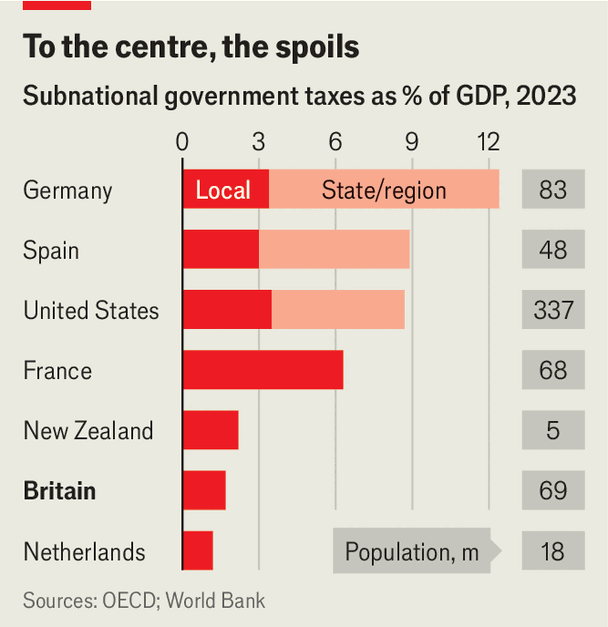

Having clawed his way to power, Andy Burnham wants to give some away
No representation without taxation
Jul 30th 2026
Northampton, a town of some 250,000 people located almost as far from the coast as it is possible to get in England, is a pleasant place. It has become even nicer recently. A fleet of new electric buses trundles along the roads. A derelict pub, the Old Black Lion, has been beautifully renovated. The market square has been spruced up. It will soon acquire a giant sandpit and deckchairs, for those who cannot face the drive to the seaside.
What might surprise a foreign visitor, although probably not a Briton, is how these enhancements have been paid for. Every one, including the temporary beach, is financed at least partly by the national government in Westminster. “Funded by UK government,” reads a sign in the market square, just to rub it in.
Britain’s national government grips England—though not Northern Ireland, Scotland or Wales—with a tightness that would embarrass a dictator. Westminster decides everything from the sums that local authorities can charge for planning applications (90% of the processing cost) to the tinkling of ice-cream vans (“the passage of music played should not last more than 12 seconds”). It collects almost all taxes, leaving a pittance for local governments (see chart). “We are more centralised than New Zealand, which has five million people,” says Philip McCann, a regional economist at the University of Manchester.

You might suppose that an all-powerful central government would at least manage to spread wealth around the country. Yet Britain is startlingly unequal, despite the visible efforts made in towns like Northampton. GDP per person in Greater London is almost two and a half times what it is in north-east England—a bigger gap than the one between New York state and Mississippi in America, or the one between Hamburg and Thuringia in Germany.
Andy Burnham, the new prime minister, thinks these two facts are connected. To him, places are poor not only because they have been overlooked by Westminster but also because they lack the power to improve their fortunes. On July 23rd he opened a “Number 10 North” office in Manchester, where he was recently mayor. As The Economist was published, he was preparing to announce that metropolitan governments would be able to keep more of the taxes raised in their territories. It is a welcome change, but a treacherous one.
England was not always so highly centralised. Its towns and cities are studded with spectacular town halls and guildhalls which memorialise an era of civic power in the 19th century. Centralisation lurched forward after the second world war under two great prime ministers. Clement Attlee built a national welfare state and health service; Margaret Thatcher abolished metropolitan governments in London, Manchester and elsewhere.
Britons have grown accustomed to centralisation. They use the phrase “postcode lottery” to describe the horrifying prospect of public services differing from place to place. They use local ballots to deliver judgments on national politicians (an awful set of local election results in May triggered the previous prime minister’s downfall). But Mr Burnham’s diagnosis of the link between centralisation and poor local performance is almost certainly right.
Local governments currently have few direct incentives to encourage economic growth in their patches. If, probably against strong local opposition, a local authority decides to permit a new housing estate, the transaction taxes on the homes would go to the national treasury, as would the income taxes and vat paid by the new residents. As Rachel Reeves, then the chancellor, put it in March: “The fiscal reward for local economic success flows straight to the Exchequer.”
Instead of driving their own growth, local governments beg for handouts. Central-government departments are always offering money for something, and councils might as well ask for some. Local priorities may be a secondary consideration. In 2020 the transport department offered money for schemes that promoted “active” (that is, muscle-powered) travel. Northampton won after proposing to turn a major road one-way for cars and to add cycle lanes. Local people hated the idea, forcing the council to concoct an alternative scheme with Westminster.
Many of Britain’s biggest metropolises are weak. The former steel town of Sheffield is not just far poorer than the former steel town of Pittsburgh in America; it is also poorer than its surrounding region, Yorkshire and the Humber. National politicians know this. Over the past decade they have concentrated on building metropolitan institutions a little like the ones that were abolished in the 1980s, and giving them more responsibility.
Local councils that agree to form “combined authorities”, with elected mayors, have been rewarded with slightly more powers. The most potent, such as Greater Manchester and the West Midlands, now hold sway over transport and have some influence over adult education and health. Central-government grants come to them in the form of single pots. The combined authorities have some leeway to spend more on this, less on that, although they must still try to hit numerous performance targets agreed with Westminster.
This hesitant devolution seems to have worked. Greater Manchester has built a tram network with 99 stops and has taken control of its buses. Since 2012, when the central government signed a “city deal” with the metropolis, output has grown faster than in Britain as a whole. Research by Michiel Daams, Colin Mayer and Mr McCann shows that real-estate investors have long tolerated lower returns in London than in other cities. Recently Greater Manchester and the West Midlands have converged with the capital. Their comparatively strong governments may have made them seem safer investments.
True autonomy will come only from giving areas more control over taxes. That would allow local politicians to raise money to fund local priorities and to create revenue streams that can be borrowed against. Crucially, local economic growth would benefit them more. Research by the OECD, a club of mostly rich countries, suggests that devolving taxes boosts incomes more than devolving spending.
But how to do it? The path away from centralisation is strewn with obstacles, starting with the wildly varying capacities of local governments. The slickest metropolitan authorities have inward-investment arms; the weakest local councils are little more than glorified litter-collectors. Many, including Northampton, are yet to join combined authorities. Britain’s regional inequality is another problem. Letting local areas keep more of their tax revenue could lead to rich places getting richer and poor places getting poorer.
A safe first step for Mr Burnham is to continue with his predecessors’ plans. Ms Reeves announced last autumn that mayors would be allowed to tax overnight visitors. Tapping tourists would raise only small sums outside London (one estimate suggested Liverpool might get £11m a year). But getting the tax onto the statute book this year would be a sign of intent.
Bolder would be to give the most competent combined authorities a share of the national taxes that are raised locally—something that Ms Reeves promised to explore. The choice of levy will be crucial. VAT is a poor candidate. As a consumption tax, it is too messy to apportion when supply chains cross administrative boundaries. Property taxes already flow to local authorities, but they are the linchpin of the current byzantine redistribution system between areas. Disrupting it risks starving services in poorer regions.
The best candidate is income tax. It is easy to divvy up (a person can have only one main residence) and incentives are well-aligned. If a place manages to create more and better-paying jobs, it would reap the benefits through a higher tax take. The sums need not be huge at first. The Centre for Cities, a think-tank, reckons that around 2% of income tax raised locally is enough on average to replace the grants that existing mayors receive.
Mr Burnham could go further and let places set their own income-tax rates, as the Scottish and Welsh governments can do. Citizens might vote with their feet, moving to areas with low taxes and basic services or the opposite. That is the American way: income taxes are hefty in Massachusetts, for example, but so is school funding. Such a move is best treated as a long-term aspiration, given the need to build up local government’s capability to manage such large responsibilities.
This still leaves the question of how to achieve fairness across cities and regions. Mr Burnham has previously looked to Germany for inspiration. The country’s Basic Law stipulates that there must be “equivalent living standards” across its states, a goal backed up by a complicated system for redistributing money from richer to poorer places. Britain has a similar mechanism for the little spending it currently lets local areas control. If fiscal devolution is to work at a grander scale, Mr Burnham will have to find a formula for redistribution that prevents growing inequality while preserving growth incentives.
Britain’s new prime minister insists that it should be possible to achieve growth across the entire country, if every arm of government pulls together. It is a nice sentiment, but an unrealistic one. Meaningful devolution within England is bound to create winners and losers, as some places exploit opportunities better than others. The losers will cry foul. Listen for their howls: it will suggest that Mr Burnham’s devolution revolution is working.■